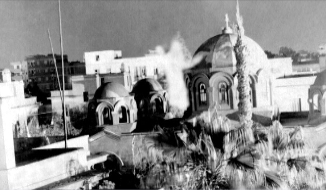

Our Blessed Mother Mary. The chosen mother of God. Known by more than 40 names to which her most common include: "The Virgin Mary," "The Lady of the Rosary," "The Immaculate Conception," "The Mother of God," and "The Queen of Peace," she is the woman who was summoned by the Archangel Gabriel for the purpose of obtaining her approval to accept God's chosen plan for her: To conceive and give birth to a boy named, Jesus, or "Yeshua", as he would have been called in his native Aramaic language. This meeting between Gabriel and Mary is referred to as "the annunciation." The decision to give her approval represents the beginning of the events leading up to the start of the new covenant between God and his people. Following the annunciation, Jesus was conceived by immaculate conception through the Holy Spirit, directly into her womb. A difficult concept for some to believe is that Jesus, then, is an entity that is both divine (the Son of God) and human (the son of Mary), simultaneously.
Taking a closer look at the annunciation as written in the Gospel of Luke (1:26-38): 26 In the sixth month of Elizabeth’s pregnancy, God sent the angel Gabriel to Nazareth, a town in Galilee, 27 to a virgin pledged to be married to a man named Joseph, a descendant of David. The virgin’s name was Mary. 28 The angel went to her and said, “Greetings, you who are highly favored! The Lord is with you.” 29 Mary was greatly troubled at his words and wondered what kind of greeting this might be. 30 But the angel said to her, “Do not be afraid, Mary; you have found favor with God. 31 You will conceive and give birth to a son, and you are to call him Jesus. 32 He will be great and will be called the Son of the Most High. The Lord God will give him the throne of his father David, 33 and he will reign over Jacob’s descendants forever; his kingdom will never end.” 34 “How will this be,” Mary asked the angel, “since I am a virgin?” 35 The angel answered, “The Holy Spirit will come on you, and the power of the Most High will overshadow you. So the holy one to be born will be called[a] the Son of God. 36 Even Elizabeth your relative is going to have a child in her old age, and she who was said to be unable to conceive is in her sixth month. 37 For no word from God will ever fail.” 38 “I am the Lord’s servant,” Mary answered. “May your word to me be fulfilled.” Then the angel left her.


As eluded to above, the new convenant began following the passion of Jesus, which ended in his crucifixion, resurrection, and ascension into heaven. It is a common misconception, even among Christians, that humanity would no longer have the opportunity to interact with either Jesus or our Blessed Mother (following her eventual assumption into heaven). However, unbeknownst to many of us, this is actually not the case. There are individuals throughout history, in fact MANY individuals, who have seen and/or heard the voice ("locution") and experienced apparitions with our Blessed Mother and our Lord Jesus Christ. For the purpose of this webpage, the focus will be Marian apparitions. If you would like to learn more about interactions with Jesus, see my UPCOMING WEBPAGE.
In fact, daily apparitions of Our Blessed Mother continue to this day in a small town in Bosnia-Herzegovina called Medjugorje. I know what you are wondering...why, if this is happening, have I not heard of it?! Something of such importance, involving the very reason for our being, surely should be attentively broadcast around the world! At least, that is what one might expect.
This is where the reason for this webpage comes in. My name is Victor and I intend to reach as many people as I am able, to spread the news. To begin, it might be best to provide you with an understanding of the frequency of apparitions which have occurred over the past millennia. Take a look at the maps above to give you a better picture of how many claims of interactions there are. Below, I will provide you with a bit more detail of a small number of these apparitions for a closer look. By no means is this an all-inclusive list. When studying this table, one must keep in mind that not all have been approved by the church as legitimate. Some, however, do not truly require approval in order for any logical individual to understand that something miraculous has occurred - noting manifestations that can only be attributed to those very claims of divine Marian interactions.
After studying the tables above, I am guessing that many readers might be tempted to click to the next website because you are thinking "this can't be true!" Or, "Where's the proof?!" Well, for you readers of little faith, this next section is presented just for you.

Zaragoza, Spain
On October 12, 40 A.D., the Virgin Mary appeared to the apostle James while he was evangelizing Jesus in modern day Spain. Following some difficult times, James prayed for help. Our Mother Mary came to his rescue in an apparition where she reassured him that his mission would not end in defeat; the people of Hispania would be converted. She asked that a church be built using the pillar on which she stood and a statue that she gave to St. James (see photo pictured here). Both were to be used as part of the alter for this new church in her honor, the first known Marian shrine in history. The pillar and statue are on display today at the Basilica of Our Lady of the Pillar in Zaragoza, Spain.
Still having doubts? Have no fear, I'm just getting started!
Guadalupe, Mexico
On December 9, 10, and 12 in 1531, Our Lady appeared to Juan Diego, an Aztec Indian in Guadalupe, Mexico. She came to offer faith and hope to the oppressed natives of Mexico and to reconcile them with their Spanish rulers. Upon ending her apparition with Juan, she left an imprint of her image on his tilma (cloak). Since this time, the tilma has been subject to extensive scientific testing. Upon examination, the following is found:

- The image is proven to not be painted by human hands.
- The image and fabric have miraculously lasted in the original condition for nearly 500 years.
- The weak cactus fiber, of which the tilma was made, should have decomposed within 15-20 years of being woven.
- No natural or animal mineral colorings, or paint, are found on the image.
- The image itself is iridescent, and cannot be produced by hand.
- Mary stands on a crescent moon, the same crescent moon that was in the sky on the day of her apparition.
- Mary's mantle is a constellation map, the same constellations that were in the sky as on the day of her apparition.
- The constellations tell the story of the Gospel with the arrangement of "Leo" in the womb of "Virgo."
- Our Lady's garment is a topographic map of the geographic location of her apparition.
- On Mary's neck is a small black cross, identifying her with the Catholic missionary priests.
- Over her womb on her dress is a four-petal flower—the Aztec symbol of life and divinity.
- In the image Mary is "clothed with the sun" with "the moon at her feet" as described in Revelation 12:1.
- A doctor once heard a heartbeat coming from the image when he placed a stethoscope over the womb.
- The eyes on the image have the refractory characteristics of human eyes.
- Mary's eyes, when examined through a microscope, reflect the images of the witnesses present at the tilma's unveiling, including Juan Diego and the bishop.
- First secret: They experienced visions of hell, where the souls of sinners will go.
- Second secret: They were told that World war I will soon end. However, there would be another war (World War II) should people continue to offend God, and Russia not be consecrated to the Immaculate Heart of Mary.
- Third secret: They were told about the 20th century persecution of Christians and that there would be a failed attempt to assassinate a Pope. This, as we now know, was Pope John Paul II whose failed assassination attempt occurred on the 64th anniversary of the first apparition of the Lady of Fatima, May 13, 1981.
This event is thought to be responsible for the start of a dramatic conversion of the Mexican people to Catholicism. The tilma is on display in the Minor Basilica of Our Lady of Guadalupe church in Mexico City, Mexico. A photo of the tilma is seen here.
Lourdes, France

In 1858, a girl named Bernadette Soubirous was out with two friends collecting fire wood. At a point where her two friends had left her behind, Bernadette was startled by a peculiar rustling sound and strong wind. When she looked up at a grotto that was nearby she noticed a golden light emanating from within. As she looked further, she saw a woman dressed in a white robe and blue sash, with a veil over her head. She was holding a rosary and had yellow roses at her feet. The lady smiled at Bernadette and asked her to pray the rosary with her. After praying, Bernadette looked up to find that the woman had vanished. After many more apparitions and townspeople accompanying Bernadette to the grotto (many of whom simply wanted to mock her as they did not believe her), the woman identified herself as Mary, the Mother of Jesus. Her purpose, she stated, was to ask all to pray and make sacrifices for sinners. During one apparition Our Lady instructed Bernadette to dig in a certain location of the grotto to find water. As Bernadette dug, she found moist soil, then mud, and eventually flowing water. This spring still flows today at a rate of 27,000 gallons each day. Bathing in the water has resulted in many miracles that have been acknowledged by local physicians. Today, over 3 million people visit the site each year, where the Sanctuary of Our Lady of Lourdes shrine now sits.
Fatima, Portugal
In 1916, in a small town of Portugal, three children: Lucia Santos - age 9, Francisco Marto - age 8, and Jacinta Marto - age 6 were out tending to sheep. They report being visited by a young male angel who identified himself as the Angel of Peace. The children reported that he appeared "as white as snow" and the sun rendered him as transparent as crystal. He taught the children how to pray, and then proceeded to pray with them before he disappeared. Again in 1916, the children were visited by the same Angel. This time, he instructed them to continue to pray and make sacrifices to God. A third visit that same year involved the Angel providing communion for the children while praying with them.

In May of 1917 the children were again tending to sheep when they saw a flash of lightening, despite no storm in the sky. After a second flash of light they saw a lady of dazzling light standing several feet away. They asked the woman where she was from. She replied "I am from heaven." She proceeded to ask the children to come to that same place on the 13th day of each month, at the same time, for 6 months. After telling family and locals, many individuals began accompanying them to this place of apparitions. As with other historical apparitions, many came to simply mock the children.
As time went on and other apparitions took place, the local government became involved since they were heavily opposed to religion at that time. However, despite being mocked, spat at by other local children, and threatened to boil them in oil by their Mayor, the children did not waiver in their proclamations. In their visits with Our Lady the children were given three secrets. They were also told that Francisco and Jacinta would soon be joining Our Lady in heaven. Francisco passed away in 1919 and Jancinta in 1920. Lucia, however, was chosen by God to perform some of his work here on earth. Through the children's apparitions with the "Lady of the Rosary," as she named herself, the children were told three secrets and instructed not to reveal the content of those secrets. Years later, however, Lucia's priest demanded that she reveal the secrets. Being obedient, she documented the content of the messages (or what was experienced) as follows:
To prove to the many thousands of people who came to witness the children during their apparition, the children asked Our Lady to show a sign that she was real, and to prove that they were not lying. Our Lady promised the children a sign to occur on October 13, 1917. This day would draw an estimated 70,000 people to the hillside, during torrential rain, to witness the children's apparition, and what would be known as the "Miracle of the Sun." This miracle, was not only seen by the 70,000 people who were present on the hillside, but also to people up to 25 miles away. Their experience of the miracle of the sun would result in many non-believer conversions to Christianity. It began after the children were instructed by the Virgin Mary to tell the people to close their umbrellas. The rain suddenly stopped and the clouds parted. The sun then "danced" in the sky while moving closer to the earth. This lasted 13 minutes and resulted in many people screaming due to their fear of the end of the world. After the miracle ended, the ground and all of the people's clothes were completely dry. If you would like to gain more of an insight into the story of Fatima, I would suggest watching the movie whose namesake is "Fatima."
Miracle of the Sun Images, Fatima, October 13, 1917:


I will assume that after learning of the apparitions at Fatima, and the Miracle of the Sun (involving 70,000+ people), you are now a believer. However, for those of you who require a bit more convincing, and a greater number of witnesses (yes, more than 70,000), here you go:

Zeitoun, Egypt
Between 1968 and 1971, atop the roof of St. Mary's Coptic Church in Zeitoun, Egypt, at least 1 million people witnessed the Holy Virgin Mary holding an olive branch (a sign of peace) bowing in front of a cross and walking across the church's domes (see photo). In addition, many reported luminous doves flying at night, along with bright flashing colors. During this time many miraculous healings were performed, and confirmed by non-Christian medical professionals. As a result of these apparitions, numerous conversions to Christianity occurred.
If everything you've read here hasn't convinced you that apparitions with the Virgin Mary have in fact taken place throughout the past millennia, I'm not sure what will! For those who still don't believe, I reiterate...more than 1 million people witnessed the apparition in Egypt, including then President Gamal Abdel Nasser. As a result of the president witnessing these apparitions, he opened communications with religious officials in Egypt.
Truly, I could write a fairly large book on all of the Marian apparitions. However, that was not my intention with this blog. So, I will leave you with one last (and quite possibly the most important) site of all apparitions. Why? Because these are still going on today!
Medugorje, Bosnia-Herzegovnia

In 1981, in a small village of then communist Yugoslavia, our Blessed Virgin Mary began daily apparitions to six children: Vicka Ivankovic - age 16, Miranja Dragicevic - age 16, Marija Pavlovic - age 16, Ivan Dragicevic - age 16, Ivanka Ivankovic - age 15, and Jakov Colo - age 10. Through these visionaries, Our Blessed Mother has been sending messages to the world pleading that people follow what is referred to today as the "The Five Stones" in order to overcome the power and influence of sin in our lives. Her purpose is to guide each one of us back to her son Jesus.

The five "stones" of salvation are: prayer, fasting, daily Bible reading, at least monthly confessions, and at least weekly partaking of the Eucharist. Our Lady warns us that the time to convert is now and it is urgent that we follow her instructions! As with Fatima, secrets are being conveyed to the visionaries - 10 to be exact. However, it is not certain that all visionaries receive the same secrets, since they do not speak of them even amongst themselves. Additionally, the visionaries receive the 10 secrets at varying times. Some have already received all 10. Others have not.
The photo to the left is the site of the first apparition. A statue has been erected on this mountain which has been given the name "Apparition Hill." The photo on the right was taken by a nun who was invited to sit with the visionaries during an apparition. She photographed the wall that the children were looking at. The children were in their usual state of disassociation at the time this photo was taken. This one took place inside a room in St. James church, in Medjugorje. When she developed the film, there was no wall. Instead, what you are looking at is the image seen in this photo.
After some photo retouching, here is a more clear image:

Ladies and gentleman, with relative certainty, this is a photo of Our Blessed Mother Mary!
This would be an appropriate time to mention that the image placed at the top of this webpage of the "Queen of Peace," as she named herself in Medjugorje, is what the visionaries describe as the painting having the closest likeness to the woman they see during their apparitions.
I would suggest a few documentaries that have been made on the apparitions in Medjugorje: The Triumph, BBC Documentary on Medjugorje - The Pilgrims, Apparition Hill, and The Story of Medjugorje. There are also a number of books that I would recommend: My Heart Will Triumph, written by one of the visionaries, Mirjana Soldo and any book written by Wayne Weible. There are a number of other books but these will help you learn about Medjugorje in a comprehensive approach. If you follow the links from weiblecolumns.org you will find an extensive listing of resources.
I would also like to point out that the information contained in this webpage is by no means a complete compilation of the information available. To fully understand the vast array of Marian Apparitions one would require a significant amount of time performing research and immersing his/herself in the resources available. I believe what you will find, as I have, that this is the most important event taking place in our world today and, if we so desire, we have the opportunity to be a part of this miraculous event! "Praise be to Jesus" and may God bless you!